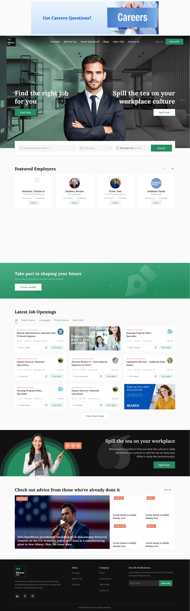
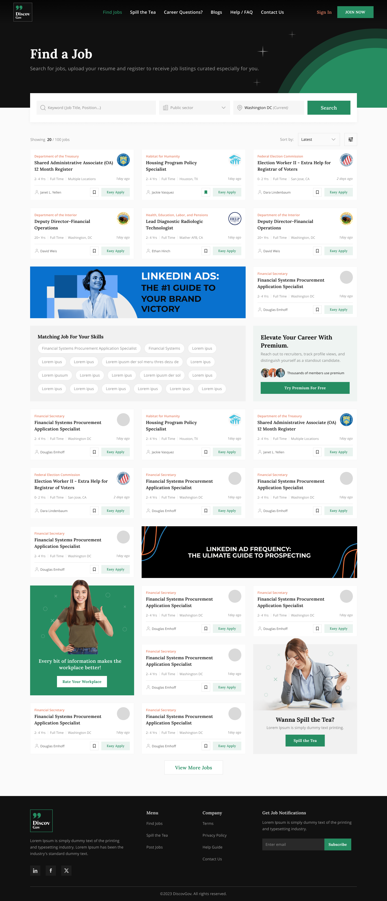
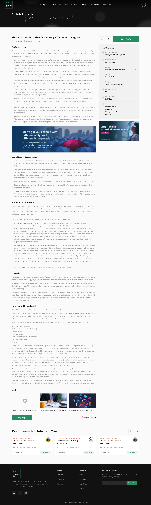
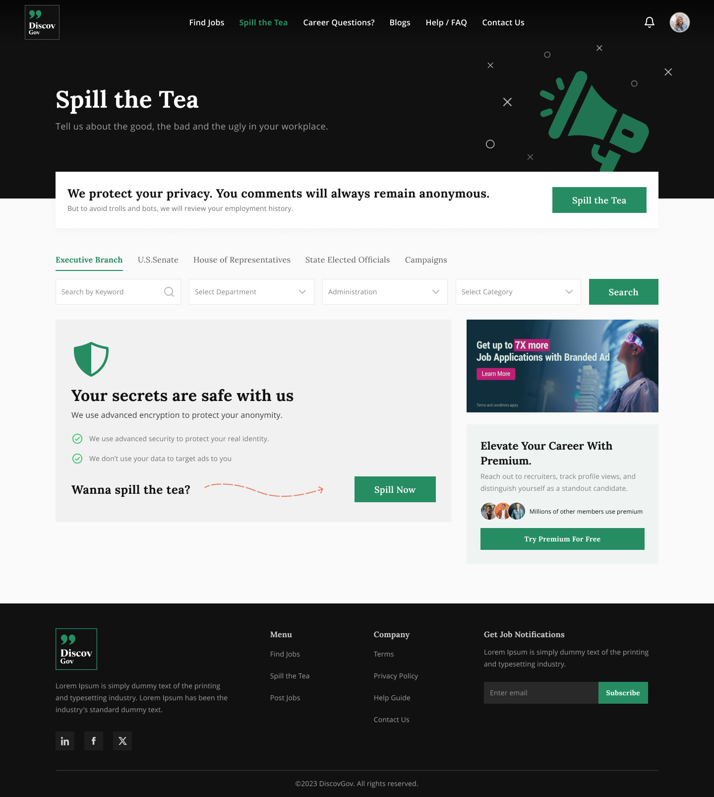
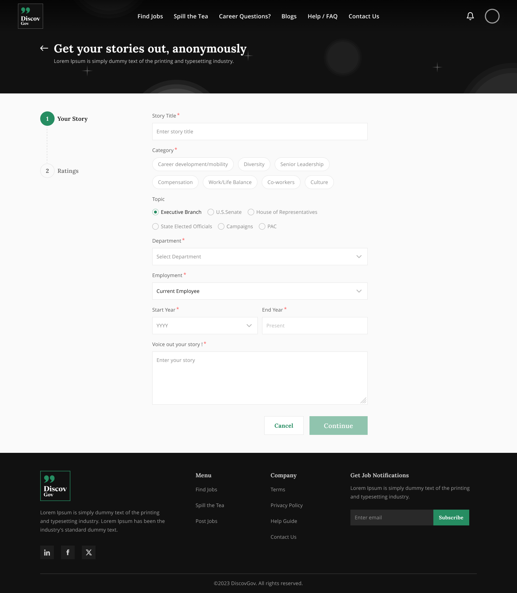
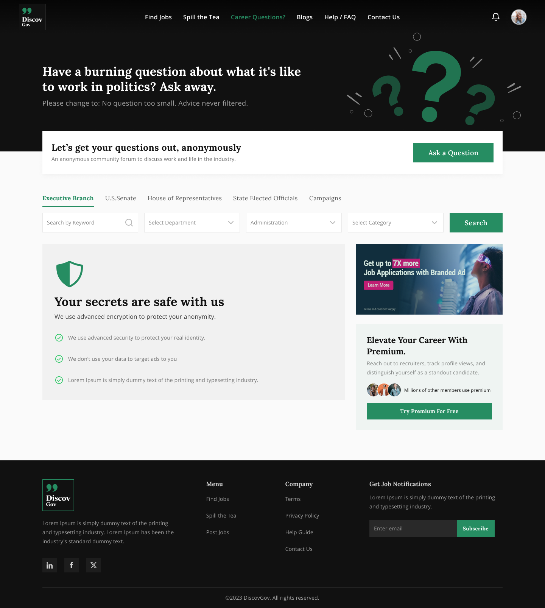
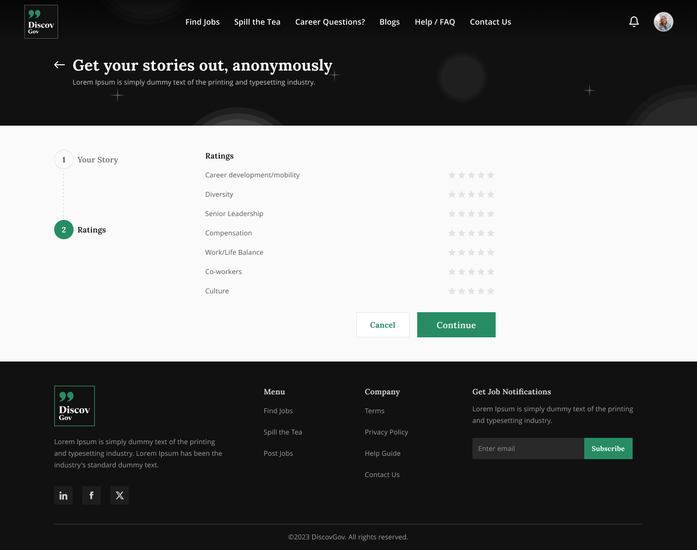
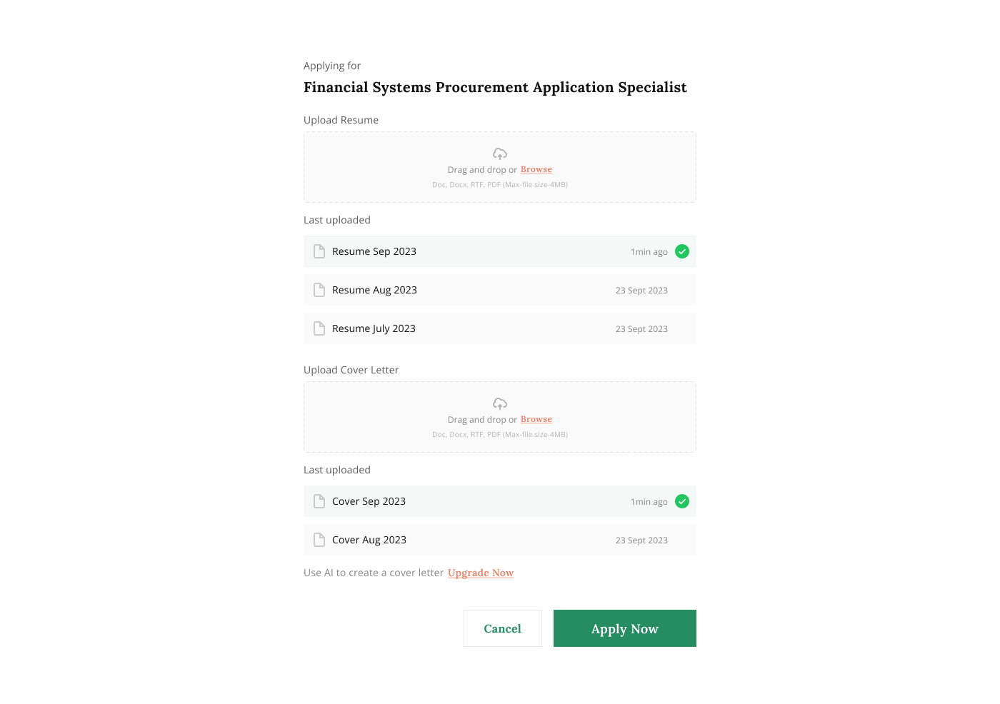
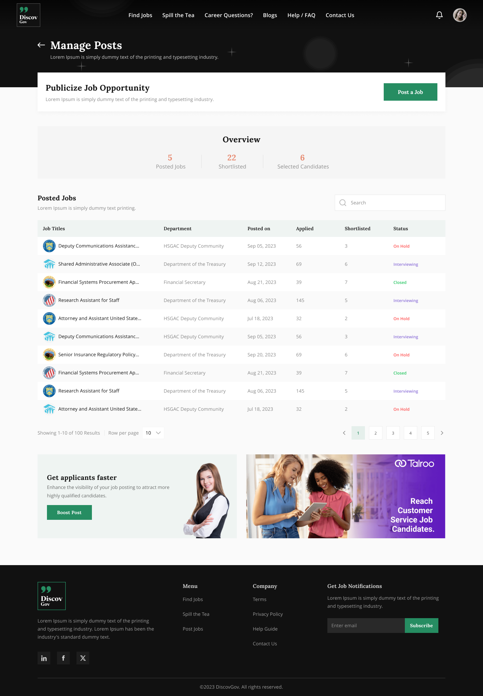

Lead Product Designer
Discovgov is a career-discovery and workplace-transparency platform spanning government, public-sector, corporate and private roles — pairing a powerful job search with a community that lets candidates "spill the tea" on real workplace culture.
01 — Overview
Public-sector hiring is scattered across dozens of departmental portals — each with its own rules, jargon and application flow. Discovgov unifies that fragmented landscape into one human place to find work, and pairs it with a transparency layer where real employees share what a job is actually like.
As Lead Product Designer I owned the experience end-to-end: research synthesis, information architecture, interaction design, the visual language, and a component library that scaled across two very different product surfaces.
Discovgov serves two audiences at once — seekers hunting for their next role, and posters (departments & employers) publishing openings and engaging their community — so every decision had to hold up from both sides.
02 — The Challenge
Openings are spread across dozens of departmental portals with inconsistent structure — candidates hunt across many sites just to see what exists.
Listings describe duties but never what it's actually like to work there. People apply, interview and accept roles almost blind.
Dense, jargon-heavy government forms — eligibility, conditions of employment, series & grade — quietly scare off qualified applicants.
03 — Design Goals
Bring government, public-sector, corporate and private roles into one consistent, filterable search.
Surface real employee voices — stories, ratings and Q&A — right where hiring decisions are made.
Turn dense, jargon-heavy government applications into a guided, low-friction Easy Apply.
Give posters a first-class surface to publish, track and engage — powered by one shared design system.
04 — Research & Insights
"I never know what a place is really like until I've already quit my last job."
So we embedded ratings, employee stories and Q&A directly into job and company pages.
"Half the words on a government posting don't mean anything to me."
So job detail uses plain-language labels and a scannable, sectioned structure.
"I search by the department I want to work for, not a job title."
So featured employers, sector tabs and rich department profiles anchor discovery.
05 — Two Sides, One System
Every flow was mapped for two people at once. The information architecture keeps them distinct where it matters, and shared where it counts.
People searching for their next public-sector or private role — and vetting the culture before they commit.
Government departments and employers publishing roles and building a public reputation.
06 — Design System
A serif-led type pairing gives the platform warmth and authority — unusual for a job board — while a restrained palette keeps dense content readable.
Aa
Lora
Display & headings — a warm serif that gives an otherwise transactional job platform a human, trustworthy voice.
ABCDEFGHIJ · abcdefg · 0123456789
Aa
Open Sans
Body & UI — a neutral, highly legible sans that carries long-form government copy without fatigue.
ABCDEFGHIJ · abcdefg · 0123456789
Palette
07 — The Product
Two clear entry points — "Find the right job" and "Spill the tea on workplace culture" — set the tone immediately. Featured employers, sector-tabbed latest jobs and community media follow in a calm, scannable rhythm.

Sector tabs (public, corporate, private, government), a persistent filter rail and a "Matching for your skills" band turn an overwhelming list into a guided hunt — with Free Apply and Easy Apply surfaced on every card.

Dense requirements — conditions of employment, minimum qualifications, education — are broken into scannable sections. A sticky Easy Apply keeps the primary action one click away, with recommended jobs to keep momentum.

08 — Transparency Layer
Four connected features let employees speak and candidates listen — turning a job board into a place people actually trust.

Long-form posts where people share honest experiences of a workplace — the signal candidates crave before they apply.

Short broadcasts from employees and departments, surfacing culture, updates and candid takes in one scannable feed.

Candidates post questions to employees and departments and get answered in a threaded Q&A — replacing guesswork with first-hand context.

Structured ratings distil sentiment into a signal you can compare across employers — the fast counterpart to long-form stories.
09 — Flow Spotlight · Seeker
One action, reachable from any job card or the sticky bar on the detail page.
A pre-filled profile and resume, editable in place — no re-typing what the platform already knows.
A few screening questions, then done — with live status tracked in My Jobs.

10 — Flow Spotlight · Poster

A guided flow with government-aware fields, so a complex listing feels simple.
One dashboard follows candidates from applied to hired, with chat built in.
Answer questions, broadcast Voice Out updates, and respond to stories in-platform.
An entity profile and accumulating ratings turn hiring into a long-term presence.
11 — Outcomes
Illustrative metrics — swap in real figures once you have them.
Fewer steps and pre-filled data on Easy Apply.
Guided flow vs. the legacy multi-page form.
Seekers who read stories, ratings or Q&A before applying.
Departments rating the dashboard & posting flow.
12 — Reflection
Designing for two audiences on one system built a discipline I now default to: every component earns its place by working in more than one context. The seeker's job card and the poster's applicant row share DNA — which kept the system small and the build fast.
The community only worked because stories, ratings and Q&A were woven into discovery rather than parked elsewhere. When culture lives right next to the apply button, people make better decisions — and come back.